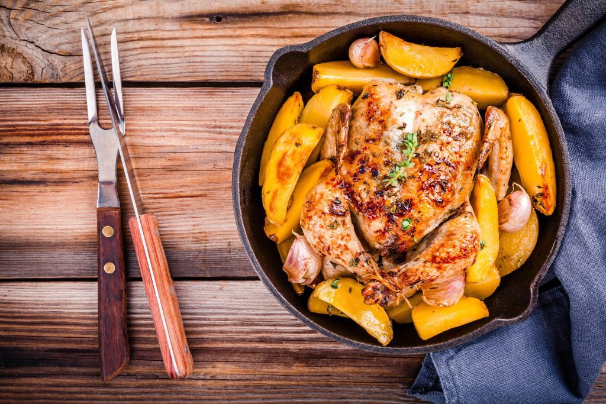

Frango inteiro com batatas rústicas
- 1 frango inteiro
- ¼ xícara de chá de cheiro verde picado
- 2 dentes de alho picados
- 1 colher de sopa de mostarda
- 700g de batatas
- ⅓ xícara de chá de manteiga
- Sal e pimenta-do-reino a gosto
Ingredientes
Batata rústica:
Confira o Video:
Modo de Preparo
Em uma tigela misture a manteiga com o cheiro-verde picado e reserve. Tempere o frango com alho, mostarda, sal e a pimenta-do-reino, passe metade da manteiga sobre o frango e embrulhe sobre uma camada de papel alumínio, coloque em um dos cestos da Air Fryer. Corte as batatas em 4 e tempere com o restante da manteiga, sal e pimenta-do-reino, adicione no outro cesto da Air Fryer. Assim, que acabar o tempo, abra o papel alumínio do frango e leve a Air Fryer por mais 10 minutos a 180ºC